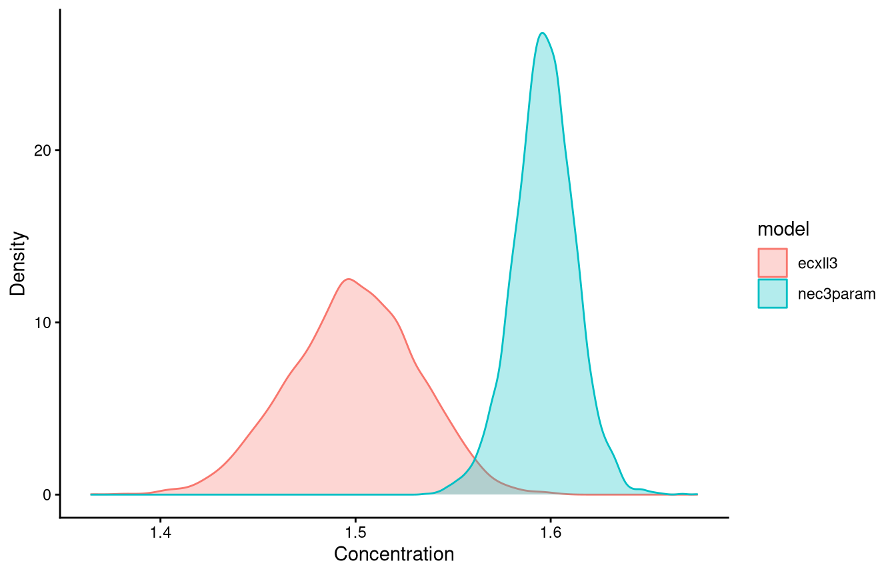
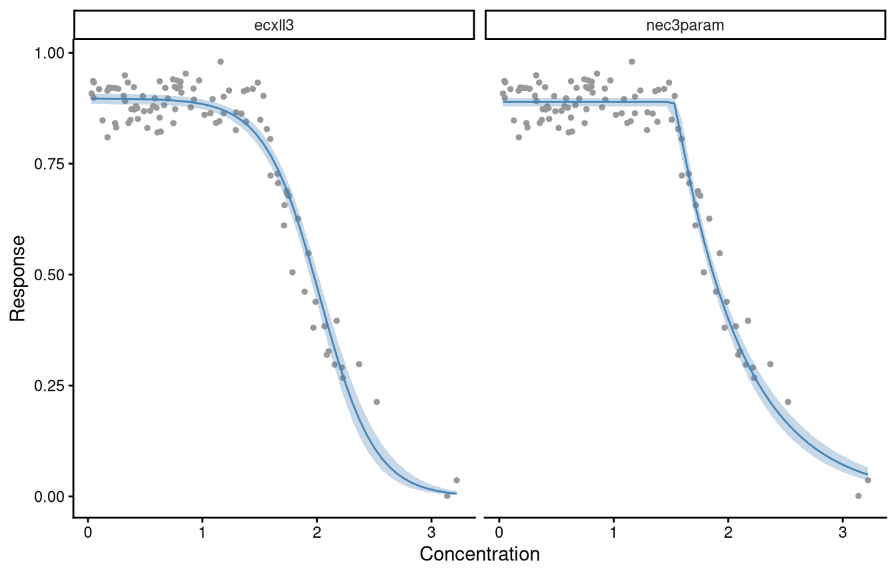
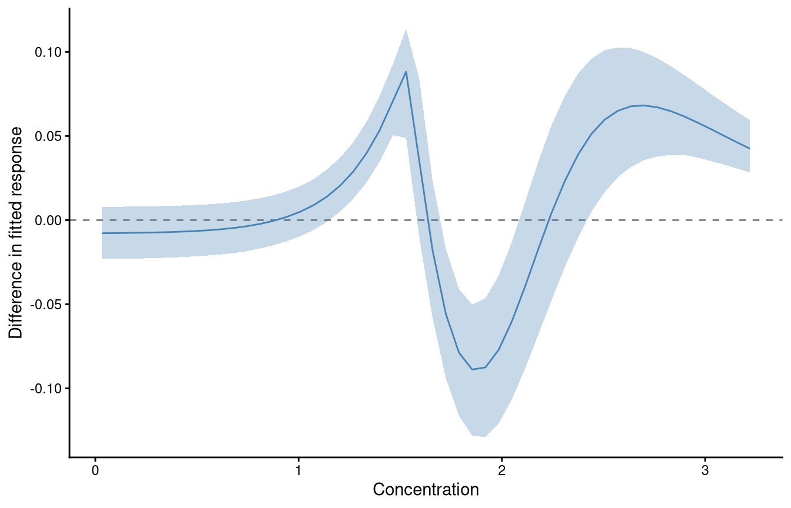

formals(bnec)$prior_type[1] "uninformative"What the priors do, how bayesnec builds them, and how to change them
This course uses Bayesian methods throughout, and from the installation onwards that can look like an unnecessary complication, since frequentist solutions exist for most of it, drc among them. The extra overhead has probably held back the use of Bayesian methods for threshold derivation in ecotoxicology, where specialist statistical support is not usually available (R. Fisher et al. 2019).
Three things justify the overhead: a stable and flexible fitting platform, estimates of uncertainty that mean what people assume they mean, and the posterior sample itself, which every estimate in this course is read from.

In Bayesian inference the parameters and their uncertainty are estimated as probability distributions. Uncertainty in a derived threshold is what makes it usable in risk assessment and formal decision frameworks (Fisher et al. 2018), and Bayesian methods quantify it with a direct probabilistic meaning (Ellison 1996).
The distinction between the two paradigms, in brief:
That difference is why a Bayesian interval answers the question most people think a confidence interval answers. It holds provided the priors have been handled properly.
This introduction covers the principles without the mathematics:
A Bayesian fit returns draws from the joint posterior of every parameter, and what follows in an analysis is done on those draws rather than on a point estimate and a standard error.
A derived quantity is computed once per draw, so it arrives with an interval of its own. ecx(), nsec() and ecnsec() each evaluate the fitted curve draw by draw and return the distribution that results. The interval on the estimate therefore follows from the parameter draws with no separate approximation. Maximum likelihood needs the delta method or a bootstrap for the same interval, and the drc reference page derives an NSEC that has no interval at all for that reason.
A question about two estimates becomes a proportion of draws. compare_posterior() pairs the draws of two fits and reports the probability that one estimate exceeds the other. Using posterior distributions, at the end of this module, works that through on two equations fitted to nec_data, and module 8 uses it to compare the toxicity of copper and zinc. The same count answers whether a threshold falls below a guideline value, which is the form a risk assessment usually needs (Fisher et al. 2018).
Model averaging is done on the draws as well. bnec() weights the candidate equations by their leave-one-out predictive performance and draws from each in proportion to its weight, so an estimate taken from a model-averaged fit includes the uncertainty about which equation describes the data. Module 4 covers how the weights are computed.
The draws also travel into work downstream of the fit. A species sensitivity distribution fitted to point estimates treats each species value as known exactly, and fitting it to the draws instead propagates the uncertainty in each species into the hazard concentration that comes out (Charles et al. 2020; Gottschalk and Nowack 2013).
None of this removes the overhead. A fit takes minutes rather than seconds and needs a working toolchain. The priors are a further assumption that a maximum likelihood fit does not make. Stating them, checking them and measuring how much they matter are covered from Priors to Fixing a parameter, and Using posterior distributions returns to the draws.
The posterior combines a prior distribution for each parameter, \(p(\theta)\), with the likelihood of the observed data given those parameters, \(p(D | \theta)\):
\[ p(\theta | D) = \frac{p(D | \theta)\, p(\theta)}{\int_{\theta} p(D | \theta)\, p(\theta)\, d\theta} \propto p(D | \theta)\, p(\theta) \tag{1}\]
The denominator is usually analytically intractable, which is why Bayesian fitting relies on numerical approximation by Markov chain Monte Carlo.
Many packages implement MCMC, among them WinBUGS (Lunn et al. 2000), JAGS (Plummer 2003) and Stan (Carpenter et al. 2017), reached from R through R2WinBUGS, R2jags (Su and Yajima 2015) and rstan (Stan Development Team 2021).

These require the model to be specified in a separate language, which is a real barrier. brms (Bürkner 2017) removes it for a wide range of models by generating that code from lme4-like formula syntax, fitting through rstan (Stan Development Team 2021) or cmdstanr (Gabry and Češnovar 2022). Even so, automating Bayesian fits across arbitrary use cases is difficult, particularly the initial values and the priors, and extracting NEC or ECx estimates with their uncertainty from a set of posterior draws is cumbersome without dedicated code. Those are the gaps bayesnec fills, as module 1 described.
Stan uses Hamiltonian Monte Carlo with the no-U-turn sampler, which sets the number of steps in each trajectory automatically (Hoffman and Gelman 2014). The step size is tuned during warm-up towards a target acceptance rate, which brms exposes as control = list(adapt_delta = ...).
A Bayesian analysis requires a prior probability density for every parameter.
Where real prior knowledge exists, such as pilot data or a previous experiment on the same response, the prior may reasonably be narrow, and will then be influential, especially if the new data are scarce or noisy. In ecology and ecotoxicology that situation is the exception.
Where no quantitative prior information exists it is common to use vague or weakly informative priors. The use of vague, diffuse or flat priors described as “uninformative” is no longer recommended (Banner et al. 2020). Such priors are the default in many packages and are often used without evaluation, sometimes from a concern about appearing subjective (Banner et al. 2020), and they can still influence the outcome substantially (Depaoli et al. 2020; Gelman et al. 2017).
The current recommendation is weakly informative, generative priors: priors that interact sensibly with the likelihood to produce a plausible data-generating mechanism (Gelman et al. 2017).
bayesnecbayesnec builds weakly informative priors by algorithm, on two principles:
The purpose is to keep the sampler away from values the researcher would regard as implausible, which is also where non-linear fits become unstable. For complex non-linear models this matters for convergence rather than only for inference. In comparisons against drc, bayesnec often finds a sensible fit where drc does not, and the bounds these priors place on the parameter space are part of the reason.
Priors of this kind describe the shape and bounds of a parameter’s density while staying broad enough not to determine its posterior, given a reasonable amount of data. Used that way they give results about as objective as the frequentist equivalent, while yielding intervals that can be read as probabilities.
They still need interrogating, by sensitivity analysis (Depaoli et al. 2020) and by checking they suit the data (Gelman et al. 2017). As a rule the defaults behave well where there are enough data, which includes a reasonable number of treatment concentrations. Where data are sparse the defaults can be influential; but sparse data usually need informative priors to fit at all, and then the influence of prior knowledge should be acknowledged rather than avoided.
Two sets are supplied, "uninformative" and "regularizing", and prior_type selects between them. Its default is:
formals(bnec)$prior_type[1] "uninformative""uninformative" is the default. "regularizing" is a deliberately narrower set, and it is the one to reach for where a default fit is unstable. The narrower set is not the default for a reason that has nothing to do with which performs better: "uninformative" reproduces the priors described in the paper documenting the package (Fisher et al. 2024), so it is what a published bayesnec analysis was run under, and changing the default would silently change the result of re-running one.
On the evidence so far the narrower set is the better choice for a new analysis. The bayesnec NEWS file records 420 top and bot entries built from simulated responses across ten seeds, three designs and five families, on designs with complete effect at the highest concentration or a hurdle or zero-inflated response. The true value fell outside the central 95% of its own prior in 12 entries under the narrower set and in 127 under "uninformative". Expect it to become the default in a later version, and state which set was used either way. One assumption is worth checking before selecting it: the rule assumes the lowest concentration tested sits at the level top describes and the highest sits at the level bot describes, so on a design whose decline is incomplete, use "uninformative".
How each prior is constructed, parameter by parameter and family by family, is in the bayesnec priors article. Two consequences of the construction reach how an analysis is run. The prior on nec is truncated to the observed range of the predictor, so an estimate sitting at the edge of the tested range should be treated with suspicion rather than reported. And its width is set by the two extreme concentrations, so it responds to what is entered for the control: on the nassarius contaminant A series the priors article reports a standard deviation of 2.30 with the control recorded as 0 and 6.11 with it recorded as 1e-6. A control recorded as 0 is left out of the construction, while 1e-6 states that a concentration of 1e-6 was applied. Record a control as 0.
The defaults are data-dependent and are designed to be informative enough, relative to each parameter’s plausible region, to return fits without divergent transitions where the data are sufficient. brms provides no blanket defaults for non-linear models, and how vague a prior is depends on the likelihood in any case (Gelman et al. 2017).
They can fail in three ways. They may be too informative, giving unreasonably tight bounds, which happens mainly with few data or few unique predictor values. They may be too vague, giving poor convergence. Or they may be of the wrong family, if the data did not contain enough information for bayesnec to infer the right one.
get_priors() builds the priors from a formula and a dataset without fitting anything, which is the order they are wanted in when a fit takes minutes:
data(nec_data)
get_priors(y ~ crf(x, model = "nec3param"), data = nec_data,
family = Beta(link = "identity")) prior class coef group resp dpar
normal(0, 5) b
beta(5, 2) b
lognormal(-0.132723577442522, 1.68292842267636) b
nlpar lb ub tag source
beta <NA> <NA> user
top 0 1 user
nec 0.03234801324009 3.22051966293556 userThat is the set bnec() would use, and it can be edited and passed back through the prior argument, as Fixing a parameter does. For a model already fitted, get_priors() returns the priors it used in the same form. pull_prior() returns the whole brmsprior stored in the fit, brms defaults included, which is for inspection and is not accepted by bnec(prior = ).
A fitted model to work from:
set.seed(333)
data(nec_data)
bnec_fit <- bnec(y ~ crf(x, model = "nec3param"), data = nec_data)
save(bnec_fit, file = "vignettes/fits/m6_bnec_fit.RData")load("vignettes/fits/m6_bnec_fit.RData")sample_priors() draws from the priors held in the brms fit, which shows their shape directly:
sample_priors(pull_brmsfit(bnec_fit)$prior)`stat_bin()` using `bins = 30`. Pick better value `binwidth`.
check_priors(), which builds on the hypothesis() function of brms, plots the prior against the posterior for each parameter.
check_priors(bnec_fit)Loading required namespace: rstan
Read each panel as a pair of densities. A posterior concentrated well inside its prior was determined by the data; one that follows the shape of its prior was not. All three parameters here are determined by the data. Each posterior is a narrow spike, and each prior is broad beneath it: nec is located at about 1.5 under a prior spread across the whole tested range, and top at about 0.9 under a beta(5, 2) spanning most of the interval from 0.25 to 1. The beta panel is the one to read carefully, because its spike sits at about 0.5, close to the centre of its normal(0, 5) prior on the scale of the panel. Agreement between a posterior and the centre of its prior is not evidence that the prior determined it; what settles that is the width, and this posterior is narrower than its prior by more than an order of magnitude.
check_priors() works on a bayesmanecfit as well, and takes a filename to write the plots for a whole set to a PDF rather than to the screen.
Two things the plot does not settle. A narrow interval is not evidence of a well-determined parameter: a parameter the likelihood is flat in will report a narrow posterior if its prior was narrow. Prior-to-posterior contraction, one minus the ratio of the posterior variance to the prior variance, distinguishes the two, and runs from 0 where the data added nothing to 1 where the posterior is far narrower than the prior. It is computed from pull_prior() and the posterior draws. And whether a different reasonable prior would have given a different answer is a question the plot cannot ask. prior_type makes that sensitivity analysis one argument:
set.seed(333)
exmp_reg <- bnec(y ~ crf(x, model = "nec4param"), data = nec_data,
family = Beta(link = "identity"),
prior_type = "regularizing")nec4param is used rather than nec3param so that the comparison includes bot, which nec3param does not have. On nec_data the "regularizing" set narrows and relocates the priors on top and bot and narrows the one on nec, and leaves the prior on beta unchanged. Compare the result with the same equation fitted under the default set. Posteriors that agree between the two sets are being determined by the data. Posteriors that differ are being determined by the priors, and the influence of the prior then belongs in the reporting rather than being left implicit.
The simplest way to write custom priors is to let bnec build its own first and then modify them.
set.seed(333)
exmp_a <- bnec(y ~ crf(x, model = "nec3param"), data = nec_data,
family = Beta(link = "identity"),
iter = 1e4, control = list(adapt_delta = 0.99))
save(exmp_a, file = "vignettes/fits/m6_exmp_a.RData")load("vignettes/fits/m6_exmp_a.RData")pull_prior() reports what it chose:
pull_prior(exmp_a)[[1]]
prior class coef group resp
normal(0, 5) b
normal(0, 5) b Intercept
lognormal(-0.132723577442522, 1.68292842267636) b
lognormal(-0.132723577442522, 1.68292842267636) b Intercept
beta(5, 2) b
beta(5, 2) b Intercept
gamma(0.01, 0.01) phi
dpar nlpar lb ub tag source
beta user
beta (vectorized)
nec 0.03234801324009 3.22051966293556 user
nec 0.03234801324009 3.22051966293556 (vectorized)
top 0 1 user
top 0 1 (vectorized)
0 defaultThe prior on nec is a lognormal, because nec_data$x is strictly positive. Suppose the predictor could in principle have been negative and simply was not in this dataset. A normal with a larger variance can be substituted:
set.seed(333)
my_prior <- c(prior_string("beta(5, 1)", nlpar = "top"),
prior_string("normal(1.3, 2.7)", nlpar = "nec"),
prior_string("gamma(0.5, 2)", nlpar = "beta"))
exmp_b <- bnec(y ~ crf(x, model = "nec3param"), data = nec_data,
family = Beta(link = "identity"), prior = my_prior,
iter = 1e4, control = list(adapt_delta = 0.99))
save(exmp_b, file = "vignettes/fits/m6_exmp_b.RData")load("vignettes/fits/m6_exmp_b.RData")Two things follow from that. Priors must be given for every parameter of the model, not only the ones being changed. And to find out what those parameters are before anything is fitted, use show_params():
show_params(model = "nec3param")[[1]]
y ~ top * exp(-exp(beta) * (x - nec) * step(x - nec))
top ~ 1
beta ~ 1
nec ~ 1Where several equations are fitted together, prior takes a named list with one entry per equation, and equations left out of it get the defaults. amend() takes priors for the equation being added to a set. Both are set out in the bayesnec priors article, with worked examples of each.
par(mfrow = c(1, 2))
hist(exmp_a$ne_posterior, main = "Default priors", xlab = "NEC")
hist(exmp_b$ne_posterior, main = "User priors", xlab = "NEC")
The posteriors are similar, with medians of 1.535 under the default priors and 1.533 under the user priors, which is what should happen when the data are informative enough that the priors are not driving the result. A large difference would be the signal to look harder.
A parameter can be held at a known value rather than estimated, by giving it a constant() prior. This works wherever a user-specified prior works and needs no other change. bayesnec has no fixed argument of the kind drc provides, because a point-mass prior expresses the same thing through machinery that already exists.
avoid_data stands for a two-choice avoidance dataset of your own; bayesnec does not ship one.
fixed_prior <- get_priors(y ~ crf(x, model = "nec3param"), data = avoid_data,
family = Beta(link = "identity"))
fixed_prior$prior[fixed_prior$nlpar == "top"] <- "constant(0.5)"
bnec(y ~ crf(x, model = "nec3param"), data = avoid_data,
family = Beta(link = "identity"), prior = fixed_prior)Stan does not declare a parameter whose prior is constant, so top is reported with an estimate of exactly 0.5 and no error, because it was never sampled.
The case where this is defensible is an asymptote that is structural rather than measured. In a two-choice avoidance assay, animals are offered a treated and an untreated container, and the expected proportion in the treated container at zero dose is 0.5 by design, because at zero dose the two containers are identical.
Two things, and both are easy to miss because the fit looks better rather than worse.
The first is a diagnostic. In the assay above, 0.5 is a null expectation rather than a design constant: it holds only if there is no baseline preference between the two containers arising from position, lighting, handling order or substrate. Fitting with top free gives a credible interval that either covers 0.5 or does not, and that is positive evidence about whether the assay was unbiased before the contaminant was involved. No other output of the model supplies it. Where a real baseline preference is present, fixing top at 0.5 produces a fit that looks exactly as sound as one where it is absent; the disagreement does not disappear when it is forbidden from appearing in top, but is absorbed into beta and nec instead, and so into the toxicity estimate.
The second is uncertainty. A constant asserts that the value is known exactly, so none of it propagates into an ECx or the NEC, and the credible intervals narrow. That reads as a better analysis and is the opposite of one.
A tight informative prior is the better tool in most cases, because it states what is known while still letting the data revise the parameter and still propagating the uncertainty forward. beta(6, 6) has a mean of 0.5 and a standard deviation of 0.14, concentrating top around the design expectation without asserting it:
fixed_prior$prior[fixed_prior$nlpar == "top"] <- "beta(6, 6)"Weimer et al. (2012) reach the same conclusion from the frequentist side. A linear transformation of the data changes neither the EC50 nor the slope estimate, provided the fitting function is kept, but fixing parameters in a reduced model can produce erroneous estimates. Their case is data corrected for background and normalised to a control, then fitted with the response range fixed between 100% and 0%. Fix a parameter only where there is a compelling reason.
That case is the one to refuse outright. A response divided by its control mean has a maximum of 1 by construction, and fixing top at 1 is a common reflex. Normalising to an estimated control already discards the sampling variability of the divisor, as module 5 sets out, and fixing the asymptote afterwards makes that loss invisible rather than merely present, because the intervals it narrows were already too narrow.
The posterior draws a Bayesian fit produces are useful well beyond a point estimate. They support the study of synergistic and antagonistic effects (Rebecca Fisher et al. 2019; Flores et al. 2021), the propagation of endpoint uncertainty (Charles et al. 2020; Gottschalk and Nowack 2013), and tests of hypotheses of no effect (Neal 2006).
A comparison between two estimates is a count of draws rather than a test statistic, because both estimates arrive as whole distributions. compare_posterior() does this for a named list of fits, and returns both the posteriors it used and the probability that one estimate exceeds the other.
There is one fit so far, so the comparison needs a second. ecxll3 is a smooth equation with three free parameters (top, beta and ec50), as nec3param has three (top, beta and nec), and the same lower asymptote fixed at zero, so the two fits differ in the shape of the curve rather than in what each is free to estimate.
set.seed(333)
ecxll3_fit <- bnec(y ~ crf(x, model = "ecxll3"), data = nec_data)
save(ecxll3_fit, file = "vignettes/fits/m6_ecxll3_fit.RData")load("vignettes/fits/m6_ecxll3_fit.RData")Both equations support an ECx, which is the estimate compared here. Their no-effect estimates are not the same quantity as each other, and module 3 covers that difference.
post_comp <- compare_posterior(
list("nec3param" = bnec_fit, "ecxll3" = ecxll3_fit),
comparison = "ecx", ecx_val = 10)
names(post_comp)[1] "posterior_list" "posterior_data" "diff_list" "diff_data"
[5] "prob_diff" posterior_data holds the draws of both estimates in long form, which is what a figure is drawn from:
ggplot(post_comp$posterior_data, aes(x = value)) +
geom_density(aes(group = model, colour = model, fill = model), alpha = 0.3) +
labs(x = "Concentration", y = "Density") +
theme_classic()
The two densities overlap over a narrow region and neither is contained in the other, which is a statement a pair of point estimates could not make.
sapply(post_comp$posterior_list, quantile, c(0.025, 0.5, 0.975)) nec3param ecxll3
2.5% 1.564392 1.433661
50% 1.596871 1.499401
97.5% 1.628092 1.560560The EC10 is 1.60 from the nec3param fit and 1.50 from the ecxll3 fit, with the intervals above.
prob_diff is the proportion of paired draws in which the first estimate exceeds the second, and diff_list holds the differences those proportions are taken from:
post_comp$prob_diff comparison prob
1 nec3param-ecxll3 0.997625quantile(post_comp$diff_list[["nec3param-ecxll3"]], c(0.025, 0.5, 0.975)) 2.5% 50% 97.5%
0.02826888 0.09729338 0.16921034 The probability is 0.998, so the nec3param EC10 is the higher of the two in almost every paired draw. The difference is 0.10, with a 95% interval from 0.03 to 0.17, which is the size of the disagreement rather than the confidence in it. Read both: a probability near 1 on a difference of no practical consequence is a result a large sample can produce on its own.
comparison = "fitted" compares the curves themselves at a grid of concentrations across the range of the predictor, rather than one estimate read off each.
post_fitted <- compare_posterior(
list("nec3param" = bnec_fit, "ecxll3" = ecxll3_fit),
comparison = "fitted")ggplot(post_fitted$posterior_data, aes(x = x)) +
geom_point(data = nec_data, aes(x = x, y = y), colour = "grey60", size = 1) +
geom_ribbon(aes(ymin = Q2.5, ymax = Q97.5), fill = "steelblue", alpha = 0.3) +
geom_line(aes(y = Estimate), colour = "steelblue") +
facet_wrap(~ model) +
labs(x = "Concentration", y = "Response") +
theme_classic()
Both curves pass through the data. nec3param holds the control level flat to its threshold a little above 1.5 and turns sharply there; ecxll3 has begun to decline before 1.5 and turns gradually, so it sits below nec3param just before the threshold and above it just after. Reading a separation off two panels stops at that description, and the difference below puts a number and an interval on it at every concentration.
head(post_fitted$diff_data) comparison diff.Estimate diff.Q2.5 diff.Q97.5 x
1 nec3param-ecxll3 -0.007756050 -0.02309775 0.007926149 0.03234801
2 nec3param-ecxll3 -0.007697805 -0.02302017 0.007976606 0.09741274
3 nec3param-ecxll3 -0.007593218 -0.02291801 0.008035863 0.16247747
4 nec3param-ecxll3 -0.007472640 -0.02277504 0.008140872 0.22754220
5 nec3param-ecxll3 -0.007321628 -0.02257281 0.008296343 0.29260692
6 nec3param-ecxll3 -0.007120775 -0.02228804 0.008472794 0.35767165ggplot(post_fitted$diff_data) +
geom_hline(yintercept = 0, linetype = 2, colour = "grey50") +
geom_ribbon(aes(x = x, ymin = diff.Q2.5, ymax = diff.Q97.5),
fill = "steelblue", alpha = 0.3) +
geom_line(aes(x = x, y = diff.Estimate), colour = "steelblue") +
labs(x = "Concentration", y = "Difference in fitted response") +
theme_classic()
nec3param minus ecxll3, so a positive value is a higher predicted response from the threshold equation.
Where the band excludes zero the two curves differ at that concentration. These two agree from 0.03 to 1.14 and differ over 25 of the 50 grid points. The nec3param curve is the higher of the two from 1.20 to 1.53, the lower from 1.72 to 2.05, and the higher again from 2.44 to 3.22. The largest difference is 0.089 at a concentration of 1.85, on observed responses spanning 0.001 to 0.98. That is what the comparison achieved: it located the disagreement between the two equations on the concentration axis and bounded its size, where the EC10 comparison above gave only that one of them was larger.
nec_data was simulated from a four-parameter threshold equation with its threshold set at 1.5, which data-raw/nec_data.R in the bayesnec sources records, and the pattern follows from that. The threshold equation holds the control level up to 1.5, where the log-logistic has already begun to decline, and then falls more steeply than the log-logistic immediately above it. Above 2.44 the log-logistic approaches zero the faster of the two.
Two readings of the same pair of fits therefore disagree on how far apart they are: the EC10 posteriors separate at a probability of 0.998, and the curves are indistinguishable over the lower third of the concentration range. A single estimate is one point on a curve, and which of the two answers the question depends on what is being reported.
The draws are paired at random, which approximates the difference of two independent posteriors. Both fits here are to the same 100 observations, so this comparison measures the difference between two equations rather than between two experiments. Module 4 covers averaging over the equations rather than choosing between them.
The comparison a real analysis makes is between fits to different data, such as two exposure durations or two levels of a factor. Module 8 does that with bnec_group(), through this same function. comparison also takes "nec", "nsec" and "n(s)ec", which compare the no-effect estimates module 3 covers.